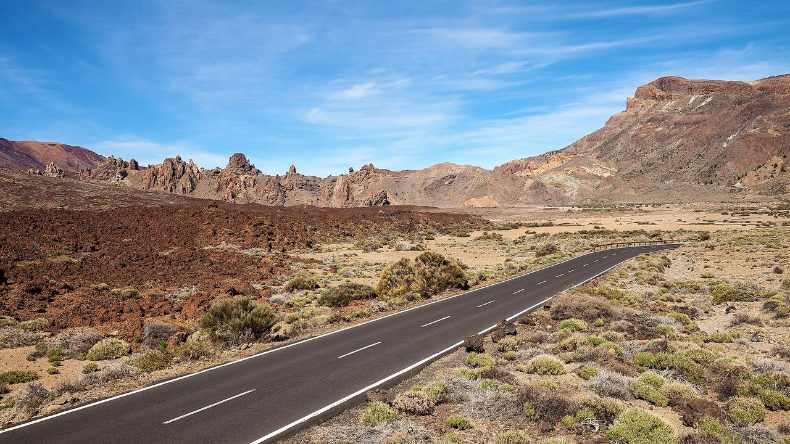

Race, Mount Teide

Behind
Best +0:01
371W
Target 418 W-47 W
- Cadence
- 87rpm
- Heart
- 140bpm
- Speed
- 26.5km/h
Work8 of 9
3:43
Next: · 3:00 at level 13
+3.8%
292 m climbed
10.48 km
21
Resistance / 32
Solo races your best-time ghost: position reads Ahead or Behind, and solo alone gets a Pause button. Frozen at 23:17.